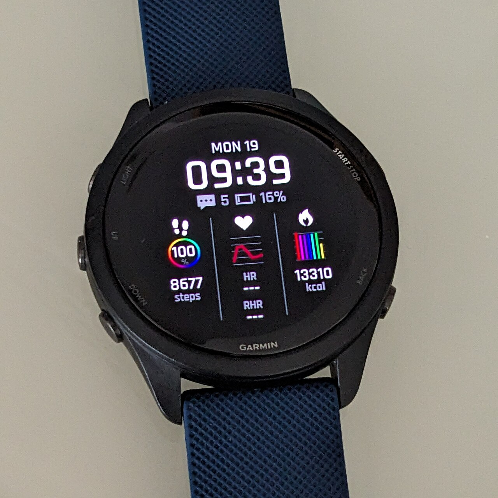

Training with Technology
Technology helps athletes and coaches understand performance beyond the final score. By collecting information about movement, physical effort, and technique, they can identify strengths and decide what to work on during training.
Wearable Technology

Wearable devices collect information while athletes train and compete. Fitness watches, heart rate monitors, and tracking sensors can measure aspects of physical activity such as heart rate, distance, and speed.
Devices such as Garmin fitness watches help users track workouts over time. Reviewing this information can help athletes monitor their progress and adjust their goals.
Examples of Wearable Data
- Heart rate during exercise
- Distance traveled during a workout
- Running speed and pace
- Workout duration
Player Tracking
Player tracking systems use cameras or wearable sensors to record athletes' positions and movements. Coaches can use this information to study positioning, movement patterns, and the physical demands of competition.
In team sports, tracking data can help explain how players create space, cover the field, and contribute beyond traditional statistics.
Biomechanics and Technique
Biomechanics examines how the body moves. Video and motion analysis allow athletes to review their technique and identify movements that may affect their performance.
Golf Swing Analysis
Systems such as TrackMan provide measurements of club movement and ball flight. Golfers and coaches can review information such as club speed, launch angle, and spin rate to understand the results of a swing.
Combining these measurements with coaching feedback helps golfers evaluate adjustments during practice.
Training Load and Injury Prevention
Monitoring training can help coaches understand how much work an athlete is doing and when recovery may be needed. Changes in workload or movement can provide information worth discussing with coaches and medical staff.
Technology cannot guarantee that injuries will be prevented. Its measurements are most useful when considered alongside an athlete's experience, coaching observations, and professional medical judgment.
Turning Data into Decisions
Collecting data is only part of the process. Athletes and coaches must interpret the information and connect it to specific goals. Useful measurements can guide practice, track improvement, and support more informed decisions.